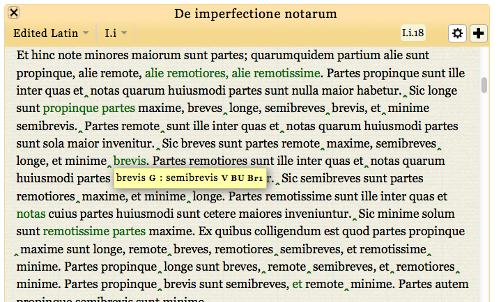

  <div class="content">
  	<div class="contentbox">
      <div class="explanation navigation">
          <div class="explanation-row">
            <div class="cell"></div>
            <div class="cell"><a href="../#">Up (website guide)</a></div>
            <div class="cell"></div>
          </div>
        <div class="explanation-row">
          <div class="cell"><a href="1.html">Back (working with variants)</a></div>
          <div class="cell"></div>
          <div class="cell"><a href="3.html">Next (persistent pop-ups)</a></div>
        </div>
      </div>
      <h3>The edition pages: viewing variants II</h3>
      <p>Moving the mouse pointer over any green variant indicator
      makes a box appear, with details of the way in which the
      witnesses vary, along with any editorial comments.</p>
      <div class="helpshot h716">
        
      </div>
    <!--end .contentbox -->
  	</div>
    <!-- end .content -->
   </div>
